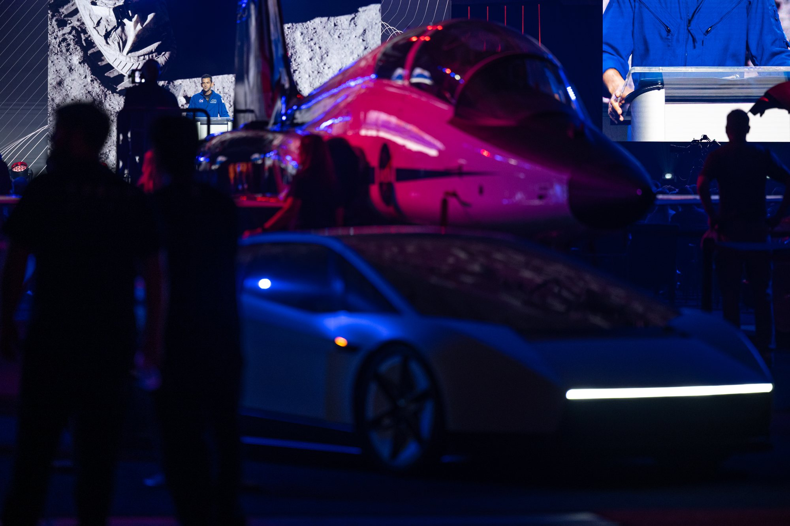
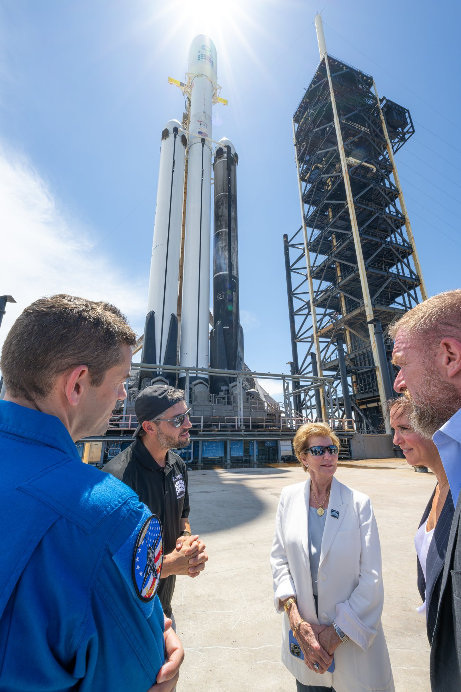
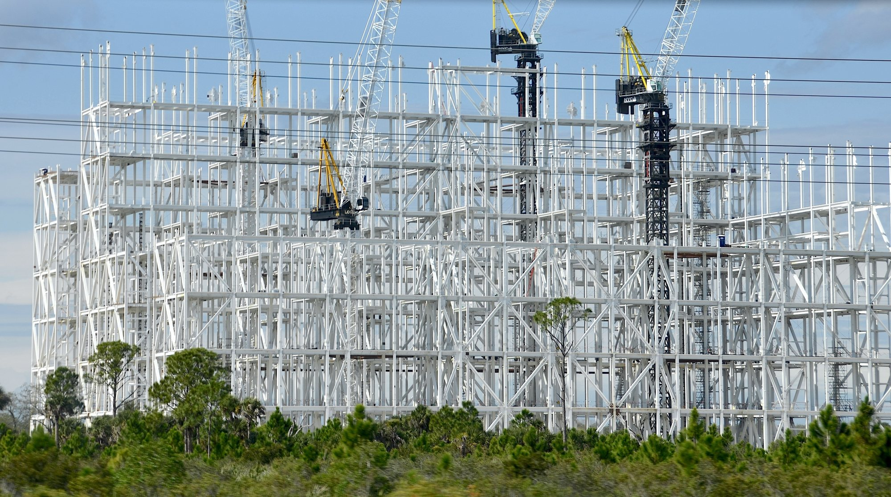

Per vent'anni SpaceX è stata, prima di tutto, la società dei razzi riutilizzabili. Kiko Dontchev, vicepresidente del lancio e uomo che ha seguito sul campo tutti i Falcon 9 dal primo volo del 2010, ha usato invece un'altra parola: infrastrutture. Lo ha fatto la settimana scorsa all'UP.Summit, la conferenza sull'innovazione aerospaziale ospitata quest'anno dalla NASA al Kennedy Space Center dentro il MAX POWER, e il suo intervento è diventato nelle ultime ore uno dei più discussi fra gli appassionati, perché tocca tre temi delicati insieme: l'uso dell'AI, il destino di Falcon 9 e il calendario di Starship in Florida.
«Fondamentalmente una società di infrastrutture»
La frase che ha dato il titolo a tutto l'intervento è questa: «In the last couple years, when I talk about SpaceX, yes, we are a rocket company, but fundamentally we are an infrastructure company at this point». Negli ultimi due anni, quando parlo di SpaceX, sì, siamo una società di razzi, ma a questo punto siamo fondamentalmente una società di infrastrutture. E ha spiegato quali: «We're building infrastructure on the ground and low Earth orbit, soon on the Moon, and obviously eventually Mars». Costruiamo infrastrutture a terra e in orbita bassa, presto sulla Luna e ovviamente, alla fine, su Marte.
Non è solo uno slogan. Il cambio di pelle era cominciato con Starlink, la rete di satelliti diventata il cuore economico dell'azienda, e negli ultimi diciotto mesi ha accelerato con la svolta verso dati e intelligenza artificiale: quest'anno SpaceX ha incorporato xAI, l'altra società di Elon Musk, e Musk parla sempre più spesso di data center in orbita, centinaia di migliaia di satelliti a energia solare che venderebbero potenza di calcolo agli utenti sulla Terra. Il razzo, in questa visione, è il mezzo per costruire e mantenere una rete, non più il prodotto finale.

Grok in fabbrica: il caso dei detriti
La parte più concreta riguarda l'AI. Gli ingegneri di SpaceX usavano già gli strumenti di xAI, ha detto Dontchev, ma è stato quest'anno che l'adozione è esplosa: «Even just a year ago, we weren't adopting it that quickly», ancora un anno fa non la adottavamo così in fretta. Poi l'accelerazione: la capacità di fare ingegneria, ha raccontato, è cresciuta come non aveva mai visto nei suoi sedici anni in azienda. Lavori che richiedevano ore o giorni ora si chiudono in secondi o minuti.
L'esempio scelto è molto pratico. Nel gergo aerospaziale FOD, foreign object debris, indica qualsiasi corpo estraneo rimasto dentro un componente: un frammento di metallo, una rondella, un residuo di lavorazione. In un motore a razzo può bastare a provocare un guasto catastrofico. Per trovarli un ispettore infila un boroscopio, una piccola telecamera su sonda, dentro i tubi e guarda il video. «We find that humans are about 94 percent perfect (at) finding a piece of it. Grok analyzing the same video is 99.9 percent perfect», gli esseri umani trovano il pezzo nel 94 per cento dei casi, Grok che analizza lo stesso video arriva al 99,9 per cento. Per questo, ha spiegato, il rilevamento dei detriti è stato in gran parte automatizzato.
Lo stesso metodo vale per altre ispezioni visive, per esempio sui terminali Starlink che escono dalle linee di produzione. E l'uso non è riservato agli ingegneri: «every single person, including the technicians and the technician leaders», ogni singola persona, compresi i tecnici e i loro capi, la usa ogni giorno, e questo, ha detto, ha livellato il campo e accelerato la crescita professionale delle persone. Sono numeri dichiarati da SpaceX e non verificabili dall'esterno, ma danno l'idea di dove l'azienda sta mettendo le mani.
Dontchev ha anche risposto, indirettamente, a chi teme che SpaceX abbia messo Marte in un cassetto: senza l'AI, ha detto, saremmo arrivati comunque sulla Luna e su Marte, «we're going to get there so much faster», ci arriveremo molto più in fretta.

Perché Falcon 9 va verso il pensionamento
Il passaggio più forte, detto da chi quel razzo lo conosce meglio di chiunque, riguarda Falcon 9. «Falcon 9, I love that rocket to heart», amo quel razzo con tutto il cuore, ha detto Dontchev, ricordando di averli lanciati tutti. «But it's still not fully reusable. We still throw that second stage away every single flight». Ma non è ancora completamente riutilizzabile: buttiamo via il secondo stadio a ogni singolo volo. Con Starship, invece, saranno recuperati alla torre sia il primo sia il secondo stadio.
Il ragionamento è di scala. Per cento lanci l'anno un razzo riutilizzabile a metà funziona, ed è quello che Falcon 9 ha dimostrato per un decennio. Per un'azienda che punta a migliaia di lanci l'anno, forse un giorno diecimila, costruire un secondo stadio nuovo per ogni missione costa troppo, in denaro e soprattutto in tempo. Il punto, per SpaceX, non è più quanto pesa il carico ma quanto rende ogni lancio. Flight 14, a fine settembre il primo volo orbitale di Starship, ha portato in orbita i satelliti Starlink V3 della terza generazione: nel complesso circa dieci volte la banda dei satelliti che può portare un Falcon 9.
C'è però una domanda a cui Dontchev non ha risposto, ed è quella che preoccupa l'industria: che cosa succederà ai clienti commerciali che da dieci anni contano su Falcon 9. Diverse fonti del settore indicano che, almeno nei primi anni, SpaceX terrà i voli di Starship per sé, per Starlink, e al massimo per la NASA e gli altri clienti governativi. Se Falcon 9 si ritira prima che Starship sia aperto al mercato, chi oggi lancia satelliti commerciali dovrà cercare altrove.

Starship in Florida: pad pronto, chiatta a dicembre
La notizia più pratica riguarda il calendario. Lanciare Starship dalla Florida, ha spiegato Dontchev, rende ancora di più che dal Texas: da Cape Canaveral le traiettorie verso alcune orbite sono più favorevoli e non serve consumare propellente in manovre di correzione del piano, i cosiddetti dogleg. Risultato: una Starship partita dalla Florida potrà portare fino a venti volte la banda Starlink di un Falcon 9.
Il pad c'è. «Pad 39A is effectively complete», il 39A è di fatto completato. «We're going to transport boosters and ships over barge here to the Cape. We're hoping to actually do the first transports this year in December, and then maybe even fly by the end of the year». Trasporteremo booster e navi via chiatta fino a Cape Canaveral, speriamo di fare i primi trasporti già a dicembre e poi magari di volare entro la fine dell'anno. Oltre al 39A, SpaceX sta sviluppando altre due rampe in Florida.
Il percorso Dontchev lo aveva già raccontato il 21 ottobre a Cocoa, durante una serata benefica: i veicoli verranno costruiti in Texas, caricati in orizzontale sulla chiatta You'll Thank Me Later, portati attorno alla penisola fino a Port Canaveral, poi raddrizzati nel Gigabay e trasferiti al pad. In quella occasione aveva anticipato anche il profilo del primo volo: il booster tenterà il ritorno ai bracci della torre del 39A, mentre la nave farà circa sei giri della Terra in otto o nove ore, rilascerà il carico e scenderà a Starbase, in Texas. «Direct flight, you know? Florida to Starbase», volo diretto, Florida-Starbase, dopo un paio di giri del mondo.
Prima, Flight 15 dal Texas
Tutto questo passa dal prossimo volo. Nella notte fra il 9 e il 10 novembre il Booster 22, con i suoi 33 motori Raptor 3, è stato portato lungo la Highway 4 fino al Pad 2 di Starbase e sollevato per l'installazione sulla rampa. L'avviso operativo della FAA indica il lancio di Flight 15 non prima del 13 novembre, con il rientro il 14 in ora americana, e gli avvisi alla navigazione comprendono la prima zona per il tentativo di catturare la Ship 42 alla torre. Se riuscirà, SpaceX avrà dimostrato il recupero di entrambi gli stadi, proprio la condizione che Dontchev considera necessaria per mandare in pensione Falcon 9. Il dossier di ieri sulla missione lunare per le comunicazioni passa all'archivio Notizie.
Fonti pubbliche e tracce
Ultimo aggiornamento editoriale: 10 novembre 2026, ore 9:45 (ora italiana). Nel corpo non si ripete la fonte a ogni frase: le tracce sono raccolte qui. Le citazioni in inglese sono tradotte o riassunte subito dopo. Le percentuali sulle ispezioni sono dichiarazioni di SpaceX, non dati verificati in modo indipendente.
- Ars Technica, Eric Berger, «SpaceX now fundamentally an "infrastructure company," senior official says», 9 novembre 2026: intervento di Kiko Dontchev all'UP.Summit in Florida; citazioni su infrastrutture, adozione dell'AI, rilevamento FOD con Grok (94% contro 99,9%), ispezioni dei terminali Starlink, Falcon 9 e secondo stadio non riutilizzabile, 100 contro migliaia di lanci, Flight 14 con dieci volte la banda di un Falcon 9, fino a venti volte dalla Florida, pad 39A completato, chiatta a dicembre e volo forse entro fine anno, altre due rampe in Florida; i dubbi sui clienti commerciali.
- Florida Today, 22 ottobre 2026: serata del 21 ottobre a Cocoa Village Playhouse; profilo del primo volo dalla Florida (cattura del booster al 39A, nave per sei orbite e atterraggio a Starbase), chiatta You'll Thank Me Later, Gigabay.
- Off Planet News, 10 novembre 2026: riepilogo delle dichiarazioni di Dontchev.
- AvBrief, UP.Summit: la conferenza ospitata per la prima volta dalla NASA al Kennedy Space Center.
- NASASpaceflight su X, 10 novembre 2026: Booster 22 sollevato per l'installazione sul Pad 2; 33 motori Raptor 3; trasferimento lungo la Highway 4.
- SpaceNotices su X, 9 novembre 2026: Flight 15 nell'avviso operativo FAA, lancio non prima del 13 novembre e rientro il 14; avvisi alla navigazione con la prima zona per la cattura della Ship 42.
- NASASpaceflight, Launch Preview del 9 novembre 2026: Starship fra i lanci della settimana.
- Rivoluzione Spaziale, dossier del 9 novembre 2026: Starship e i satelliti di comunicazione della Moon Base.
Fotografie utilizzabili
Tutte le immagini sono libere. Sono di pubblico dominio NASA (NASA/John Kraus, su Wikimedia Commons) la torre Starship del 39A con l'equipaggio di Artemis III (3 settembre 2026), Dontchev al 39A con Isaacman e il Falcon Heavy (29 agosto 2026) e Isaacman sul palco dell'UP.Summit (4 novembre 2026); il Gigabay in costruzione è di Olga Ernst, CC BY-SA 4.0. Non risultano foto libere dell'intervento di Dontchev all'UP.Summit. Dettagli in scheda dei crediti fotografici.
Apri il dossier sulle comunicazioni lunari archiviato · Archivio Notizie · Torna a SpaceX